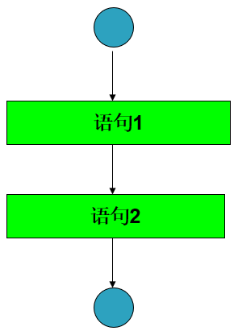
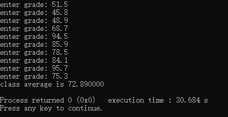
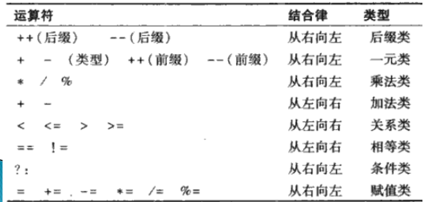

结构化的C程序设计
本章大纲
- 自顶向下、逐步求精的算法设计
- 简单的选择语句
- 采用while循环语句重复执行一段语句
- 计数控制循环和标记控制循环
- 结构化程序设计
引言
在编写程序来求解一个特定的问题之前，透彻地理解问题以及仔细地设计解决问题的办法是至关重要的。
算法
求解一个问题的流程称为算法。
- 将要执行的操作
- 执行这些操作的顺序
语句：在程序中，将要执行的一个操作称为一个语句。
程序控制
在一个计算机程序中，定义程序语句的执行顺序被称为程序控制
伪码
伪码是一种人工的、非正式的辅助人们进行算法设计的语言。
- 易于转换成相应的C程序
- 编写伪码时可以不进行变量定义
控制结构
顺序执行：通常情况下，计算机程序中的语句是按照它们被编写的顺序逐条执行的，称为顺序执行。
控制转移：下一条要执行的语句不是当前语句的后继语句
Bohm的研究结论：
-
可以不使用goto语句来编写计算机程序
-
任何计算机程序可以仅用三种控制结果来实现
-
- 顺序结构
- 选择结果
- 循环结构
顺序结构：使语句顺序执行的结构。
- 顺序结构是C语言的内在结构，除非特别指明，计算机总是自动地按照C语句在程序中被编写的顺序，逐条地执行这些语句。
流程图：流程图是一个或一段算法的图形化表示。
- 特定意义的图框
- 流程线（箭头）
顺序结构流程图：
- 矩形框：计算等处理操作
- 箭头：执行顺序
- 圆圈：开始或结束

选择结构
-
单分支：if 语句
-
双分支：if 语句1 else 语句2
-
多分支：
-
- switch 语句
- if 语句1 else if 语句2 else 语句3
循环结构
- while循环
- do while循环
- for循环
1、C语言全部的七种控制结构 ：顺序结构，三种选择结构，三种循环结构
2、结构化程序设计是基于这七种结构进行设计的。任何一个C语言程序，根据程序所实现算法的需要，由这七种结构组合而成。
3、顺序结构的单入口/单出口的控制结构易于实现程序的模块化设计。
4、结构化程序构建方法
- 堆叠
- 嵌套
语句示例
if单分支
| C | |
|---|---|
1 2 3 | |
if else 双分支
| C | |
|---|---|
1 2 3 4 5 6 7 | |
if else 嵌套
| C | |
|---|---|
1 2 3 4 5 6 7 8 9 10 | |
语句块（复合语句）：包含在一对大括号内的一组语句。
- 复合语句在语法上等同于一个语句
- 在程序中可以放置单个语句的任何地方，都可以放置复合语句。
- 在可以放置单个语句的任何地方也可以不放置任何语句，即一条空语句。空语句就是仅有一个分号（;）
| C | |
|---|---|
1 2 3 4 5 6 7 | |
while循环
| C | |
|---|---|
1 2 3 4 5 6 7 | |
计数控制的循环
问题描述：一个班级有10个学生，请计算语文考试的平均成绩（满分100）？
算法要求：
- 首先输入每一名学生的成绩
- 然后计算平均分
- 最后输出结果
解决方案
- 用伪码来描述要执行的操作及其执行顺序
- 采用计数控制的循环（确定性循环）来逐个输入学生的成绩
书写伪码
令总分total 等于0
令分数计数器counter等于1
While 分数计数器counter的值小于或等于10时
输入该分数grade
将该分数grade加到总分数total中
将分数计数器 counter的值加1
令班级平均分 average 等于总分total 除以学生人数10
输出班级平均分 average
编写代码
| C | |
|---|---|
1 2 3 4 5 6 7 8 9 10 11 12 13 14 15 16 17 18 19 | |

问题描述：设计一个每次运行时能够处理任意个成绩的平均分的程序。
| C | |
|---|---|
1 2 3 4 5 6 7 8 9 10 11 12 13 14 15 16 17 18 19 20 21 22 23 24 25 | |
类型转换
- 强制类型转换：(目标类型)原有类型
- 隐式类型转换：编译器在对源程序进行编译时，将对不同类型的操作数进行类型提升，从而使其类型一致，称作隐式类型转换。
强制类型转换运算符
- 一元运算符
- 优先级比*、\和%等高一级
- 自右相左结合
一元正（+）、负（-）运算符
- 一元运算符
- 优先级比*、\和%等高一级，与强制类型转换运算符同级
- 自右相左结合
浮点数输出
-
格式转换说明符 ：%.2f
-
- 浮点数类型输出
- 小数点后输出两位
- %f ：默认，小数点后输出六位
问题描述
10个人参加考试，1表示通过，2表示未通过。请设计程序，使其具有如下功能：
（1）输入每一名学生的考试结果（即“1”或“2”）。程序每次要求用户输入另一个考试结果时，都显示如下提示信息：Enter result(请输入考试结果）。
（2）统计每种考试结果的个数
（3）显示通过考试的学生总数和未通过考试的学生总数。
（4）如果通过考试的学生总数超过8名，则显示“Bonus to instructor”（奖励教师）。
算法设计考虑
1 这个程序要处理10个考试结果，可以采用计数控制的循环结构。
2 考试结果是一个整数：1或2。每读入一个结果，程序必须判断它是1还是2.在本算法中，只测试是否是1，如果不是1，则认为是2。
3 设置两个计数器变量，一个用来统计通过考试的学生总数，另一个用来统计未通过考试的学生总数。
4 处理完所有的考试结果后，程序必须判断通过考生的学生总数是否超过8名。
| C | |
|---|---|
1 2 3 4 5 6 7 8 9 10 11 12 13 14 15 16 17 18 19 20 21 22 | |
赋值运算符
算数赋值运算符+= -= *= /= %=
例：输入一个正整数，然后确定并打印该整数中各个位上的数字是7的个数。
| C | |
|---|---|
1 2 3 4 5 6 7 8 9 10 11 12 13 14 15 16 | |
增1减1运算符
-
增1运算符：++
-
- 先增1/先减1：++a --a
-
- 将a的值增1/减1，然后在包含a的表达式中进行计算
- 相当于使用（a+1)或（a-1)进行计算
- a的值变成(a+1)或（a-1)
-
减1运算符：--
-
- 后增1/后减1: a++ a--
-
- 在包含a的表达式中，使用a进行计算，然后将a的值增1/减1
- 不使用（a+1)和（a-1)进行计算;
- a的值变成(a+1)或（a-1)
1、一元运算符必须直接写在它们的操作数旁边，二者之间不允许插入空格，这是一元运算符与二元运算符的不同之处。
2、在一个只包含有一个变量的语句中，对变量使用先增1和后增1运算符的执行结果是相同的。
3、对一个表达式而非一个简单的变量名使用增1运算符或减1运算符，例如++(x+1)，是一个语法错误。

例子：回文检测。回文是一段数字或文本， 无论顺读还是倒读都是一样的。例如，下面这些五位数的整数都是回文：12321，55555， 45354和11611。请编写一个读入五位整数并判断其是否为回文的程序。
| C | |
|---|---|
1 2 3 4 5 6 7 8 9 10 11 12 13 14 15 16 17 18 19 20 21 22 23 24 25 26 27 | |
章小结
- 算法就是要执行的操作及其操作的顺序。
- 伪码与日常使用的英语极为类似，它并不是一种真正的计算机程序设计语言。
- 使用结构化程序设计技术编写的程序，更清晰可读、易于修改、易于查错排错。
- 任何计算机程序都可以仅用顺序结构、选择结构和循环结构来实现。
- 流程图可以用图形化的方式直观地描述算法。
- 自顶向下、逐步求精的方法是一种有效的程序设计方法。